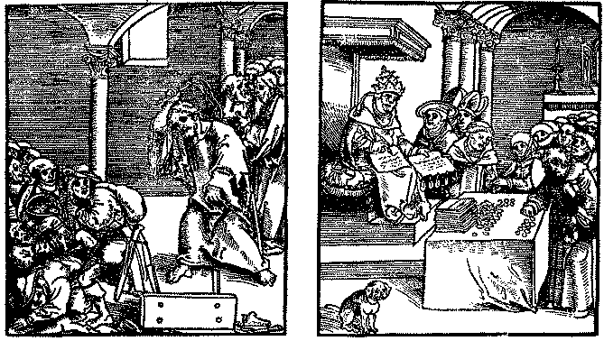

The Communion of Saints
In Catholic teaching, there are three distinct groups that comprise the Church:
The Church Militant is the body of believers still living on this earth and "fighting" for their salvation.
The Church Triumphant are the angels and those believers who have previously lived on this earth and are now in rejoicing in their heavenly home. Because their good works while on earth exceeded the requirement, the Church Triumphant have an "excess" treasury of merits of God's grace, which can then be re-distributed via Mary the Mediatrix of all Grace, and via the Church in the form of indulgences.
The Church Suffering are those believers who have died, but because of remaining unsatisfied temporal punishment due because of their sin, they must spend time in the cleansing fires of Purgatory. They will remain there until they have been completely purged of sin, and the temporal punishment they are due is completely satisfied. They are then acceptable to enter heaven.
References-
Vatican Catechism:  1474
-1477
1474
-1477
Baltimore Catechism (#4):  The
Apostles Creed.
The
Apostles Creed.
The two punishments for sin.
According to Catholic teaching, sin has two distinct punishments attached to it. One is eternal and the other is temporal.
References-
Vatican Catechism:  1472 -
1473.
1472 -
1473.
Baltimore Catechism (#4):  Question
218
Question
218
Pope Tells Catholics Not To Seek Forgiveness Directly From God!
28. ... It is good to renew and reaffirm this faith at a moment when it might be weakening, losing something of its completeness or entering into an area of shadow and silence, threatened as it is by the negative elements of the above-mentioned crisis. For the sacrament of confession is indeed being undermined, on the one hand by the obscuring of the mortal and religious conscience, the lessening of a sense of sin, the distortion of the concept of repentance and the lack of effort to live an authentically Christian life. And on the other hand, it is being undermined by the sometimes widespread idea that one can obtain forgiveness directly from God, even in a habitual way, without approaching the sacrament of reconciliation. A further negative influence is the routine of a sacramental practice sometimes lacking in fervor and real spontaneity, deriving perhaps from a mistaken and distorted idea of the effects of the sacrament.
Source: Pope John Paul II, Apostolic Exhortation  RECONCILIATION
AND PENANCE, dated December 2nd, 1984.
RECONCILIATION
AND PENANCE, dated December 2nd, 1984.
The Pope is saying that a Catholic must seek out a priest to confess their sins and ask forgiveness only through the priest, and that this "sacrament" of confession/penance is undermined by those who think they can directly approach God directly for forgiveness. This makes the Catholic priest essential in the process of salvation, since he stands in the place of God, as another mediator between man and God. This is not a novel teaching in the Catholic Church, is has a long history:
St. Leo the Great (440-461) writes: "God in His abundant mercy has provided two remedies for the sins of men; that they may gain eternal life by the grace of Baptism, and also by the remedy of Penance. Those who have violated the vows of their Baptism may obtain the remission of their sins by condemning themselves; the divine goodness has so decreed that [pg. 284] the pardon of God can only be obtained by sinners through the prayers of the priests. Jesus Christ Himself has conferred upon the rulers of the Church the power of imposing canonical penance upon sinners who confess their sins, and of allowing them to receive the Sacraments of Christ, after they have purified their souls by a salutary satisfaction. . . . " (Epis. cviii.). [Emphasis supplied]
Source: The Question Box, New Edition, by Rev. Bertrand L. Conway, Copyright 1929 by "The Missionary Society of St. Paul the Apostle, New York, published by The Paulist Press, 401 West 59th Street, New York, pages 283-284.
Note what scripture says about confessing our sins to God:
1 Tim 2:5 For there is one God, and one mediator between God and men, the man Christ Jesus;
1 John 1:7 But if we walk in the light, as he is in the light, we have fellowship one with another, and the blood of Jesus Christ his Son cleanseth us from all sin.
1 John 1:8 If we say that we have no sin, we deceive ourselves, and the truth is not in us.
1 John 1:9 If we confess our sins, he is faithful and just to forgive us our sins, and to cleanse us from all unrighteousness.
1 John 1:10 If we say that we have not sinned, we make him a liar, and his word is not in us.
1 John 2:1 My little children, these things write I unto you, that ye sin not. And if any man sin, we have an advocate with the Father, Jesus Christ the righteous:
The Auricular Confession - The Sacrament of Penance.
Source: Baltimore Catechism (#4)188 Q. How does the the Sacrament of Penance remit sin, and restore the soul to the friendship of God?
A. The Sacrament of Penance remits sin and restores the friendship of God to the soul by means of the absolution of the priest."Absolution" means the words the priest says at the time he forgives sins. Absolve means to loose or free.
219 Q. Does not the Sacrament of Penance remit all punishment due to sin?
A. The Sacrament of Penance remits the eternal punishment due to sin, but it does not always remit the temporal punishment which God requires as satisfaction for our sins.
So a Catholic who is truly sorry, confesses their sins to the priest in what is called the Auricular Confession. After weighing the gravity of the confessed sins, the priest, acting in the place of God, absolves (forgives) the sinner of the eternal punishment due (but not necessarily all the temporal punishment) for those confessed sins, and gives them a penance (good work) to perform. This is generally falls into the categories of prayer, fasting, almsgiving, spiritual and corporal works of mercy, and patient suffering of the ills of life. By performing the penance, the Catholic is taught they reduce the temporal punishment they are due, either on this earth or purgatory, to some degree.
References-
Vatican Catechism:  1440 - 1470
1440 - 1470
Baltimore Catechism (#4):
 Lesson 17 On
the Sacrament of Penance, Questions 187 - 194,
Lesson 17 On
the Sacrament of Penance, Questions 187 - 194,
 Lesson 18 On
Contrition, Questions 195 - 207,
Lesson 18 On
Contrition, Questions 195 - 207,
 Lesson 19 On
Confession, Questions 208 - 223,
Lesson 19 On
Confession, Questions 208 - 223,
 Lesson 20 On
the Manner of Making a Good Confession, Questions 224 - 230.
Lesson 20 On
the Manner of Making a Good Confession, Questions 224 - 230.
Indulgences
The remission of the temporal punishment due for sins and hence, the satisfaction owed to God for one's sins is called an indulgence. The Church grants such indulgences after the guilt of sin and its eternal punishment have been remitted by sacramental absolution or by perfect contrition. (c. 992) Indulgences are plenary or partial; plenary, when they remit all of the temporal punishment resulting from sin; partial, when a part of this punishment is remitted. Should one seek to gain a plenary indulgence but, because of some unforgiven venial sin, not all of the temporal punishment is taken away, that person gains at least a partial indulgence (c. 993).Source: The Catholic Encyclopedia, Revised and Updated, edited by Robert C. Broderick, published by Thomas Nelson Publishers, Copyright 1987, page 291.As granted by the Church in terms of time (years, days, and quarantines), a partial indulgence remits as much of the temporal punishment as would be expiated by the performance of a canonical (imposed) penance in the early Church for that length of time or for the penances of a fasting season (quarantine). Indulgences granted by the Church may be gained for oneself or for the souls in purgatory, unless otherwise declared, but no one can gain an indulgence for another living person (c. 994).
The granting of indulgences is founded upon three doctrines of Catholic faith: the treasury of the merits of the communion of saints, Christ Himself, and the Blessed Virgin and the saints. ...
References-
Vatican Catechism:  1471,
1478-1479.
1471,
1478-1479.
Baltimore Catechism (#4):  Lesson 21 On
Indulgences, Questions 231 - 237.
Lesson 21 On
Indulgences, Questions 231 - 237.
Since partial indulgences were formerly designated by specific amounts of time, you sometimes see printed after a little prayer: An indulgence of forty days, or, an indulgence of one hundred days, or of a year, etc. What does that mean? Does it mean that a person who said that prayer would get out of Purgatory forty days sooner than he would have if he had not said it? No. I told you how the early Christians were obliged to do public penance for their sins; to stand at the door of the church and beg the prayers of those entering. Sometimes their penance lasted for forty days, sometimes for one hundred days, and sometimes for a longer period. By an indulgence of forty days the Church granted the remission of as much of the temporal punishment as the early Christians would have received for doing forty days' public penance. Just how much of the temporal punishment God blotted out for forty days' public penance we do not know; but whatever it was, God blotted out just the same for one who gained an indulgence of forty days by saying a little prayer to which the indulgence was attached. But why, you may wonder, did the early Christians do such penances? Because in those days their faith was stronger than ours, and they understood better than we do the malice of sin and the punishment it deserves. Later the Christians grew more careless about their religion and the service of God. The Church, therefore, wishing to save its children, made it easier for them to do penance. If it had continued to impose the public penances, many would not have performed them, and thus would have lost their souls.
Source: Baltimore Catechism (#4):  Lesson 21 On
Indulgences, Answer to Question 237.
Lesson 21 On
Indulgences, Answer to Question 237.
INDULGENCES
Can. 992 - An Indulgence is a remission before God of the temporal punishment for sin the guilt of which is already forgiven, which a properly disposed member of the Christian faithful obtains under certain and definite conditions with the help of the Church which, as the minister of redemption, dispenses and applies authoritatively the treasury of the satisfaction of Christ and the saints.Source: Code of Canon Law (Codex Iuris Canonici), translated and published by the Canon Law Society of America, Copyright 1983, Third printing 1984, Book IV, Title IV, Chapter IV, page 365.Can. 993 - An indulgence is partial or plenary in as far as it frees from the temporal punishment due to sin either partly or totally.
Can. 994 - The faithful can gain partial or plenary indulgences for themselves or apply them for the dead by way of suffrage.
Can. 995 - § 1. Besides the supreme authority of the Church, only those can grant indulgences to whom this power has been given by the law or granted by the Roman Pontiff.
§ 2. No authority beneath the Roman Pontiff can commit to others the power to grant indulgences unless it was expressly given to him by the Apostolic See.
Can. 996 - § 1. In order that one be capable of gaining indulgences one must be baptized and not excommunicated and in the state of grace at least at the completion of the prescribed works.
§ 2. In order that one be a capable subject for gaining indulgences one must have at least the intention of receiving them and fulfill the enjoined works at the stated time in due fashion, according to the tenor of the grant.
Can 997 - In regard to the granting and use of indulgences other prescriptions contained in the particular laws of the Church must also be observed.
 1983 Code of Canon Law
online.
1983 Code of Canon Law
online.
Links to additional references:
 1968 ENCHIRIDION OF
INDULGENCES online version.
1968 ENCHIRIDION OF
INDULGENCES online version.
 Indulgentiarum Doctrina, APOSTOLIC
CONSTITUTION ON INDULGENCES Promulgated By His Holiness, Pope Paul VI On
January 1, 1967
Indulgentiarum Doctrina, APOSTOLIC
CONSTITUTION ON INDULGENCES Promulgated By His Holiness, Pope Paul VI On
January 1, 1967
 Indulgences as
defined in the 1913 Catholic Encyclopedia, online at the New Advent
Catholic Supersite.
Indulgences as
defined in the 1913 Catholic Encyclopedia, online at the New Advent
Catholic Supersite.
 Apostolic Indulgences as
defined in the 1913 Catholic Encyclopedia, online at the New Advent
Catholic Supersite.
Apostolic Indulgences as
defined in the 1913 Catholic Encyclopedia, online at the New Advent
Catholic Supersite.
 Introduction to Indulgences
at Catholic Online.
Introduction to Indulgences
at Catholic Online.
So as can be deduced from the above, the Catholic believes they are normally in a state of owing God satisfaction for the temporal punishment they are due because of sin, and they are expecting to spend some time in purgatory until they are cleansed by its fire and made fit for heaven. The Catholic believes they have to constantly perform good works to try and lessen the punishment they will receive. The Catholic literally tries to "work" their way into heaven, thinking they are making themselves acceptable to God in the process. Should they somehow fall short and wind up in purgatory instead, they then rely on the good works of friends and relatives to get them out of purgatory and into heaven. An exception to this would be when they have recently and faithfully performed a plenary (full) penance or indulgence, and die in a pristine state of grace. In that case, they are told, they will bypass purgatory and enter heaven immediately.
Is this what the Bible teaches? Are we to work off the "temporal punishment" we are supposedly due through penance or indulgences, or burn in purgatory in order to make it to heaven? What does the Bible say about justification and forgiveness of sins?
Acts 26:18 To open their eyes, and to turn them from darkness to light, and from the power of Satan unto God, that they may receive forgiveness of sins, and inheritance among them which are sanctified by faith that is in me.Rom 3:22 Even the righteousness of God which is by faith of Jesus Christ unto all and upon all them that believe: for there is no difference:
Rom 3:23 For all have sinned, and come short of the glory of God;
Rom 3:24 Being justified freely by his grace through the redemption that is in Christ Jesus:
Rom 3:25 Whom God hath set forth to be a propitiation through faith in his blood, to declare his righteousness for the remission of sins that are past, through the forbearance of God;
Rom 3:26 To declare, I say, at this time his righteousness: that he might be just, and the justifier of him which believeth in Jesus.
Rom 3:27 Where is boasting then? It is excluded. By what law? of works? Nay: but by the law of faith.
Rom 3:28 Therefore we conclude that a man is justified by faith without the deeds of the law.Rom 5:1 Therefore being justified by faith, we have peace with God through our Lord Jesus Christ:
Gal 2:16 Knowing that a man is not justified by the works of the law, but by the faith of Jesus Christ, even we have believed in Jesus Christ, that we might be justified by the faith of Christ, and not by the works of the law: for by the works of the law shall no flesh be justified.
Eph 1:7 In whom we have redemption through his blood, the forgiveness of sins, according to the riches of his grace;
Col 1:14 In whom we have redemption through his blood, even the forgiveness of sins:
1 Pet 1:18 Forasmuch as ye know that ye were not redeemed with corruptible things, as silver and gold, from your vain conversation received by tradition from your fathers;
1 Pet 1:19 But with the precious blood of Christ, as of a lamb without blemish and without spot:1 John 1:9 If we confess our sins, he is faithful and just to forgive us our sins, and to cleanse us from ALL unrighteousness.
1 John 1:10 If we say that we have not sinned, we make him a liar, and his word is not in us.
1 John 2:1 My little children, these things write I unto you, that ye sin not. And if any man sin, we have an advocate with the Father, Jesus Christ the righteous:
1 John 2:2 And he is the propitiation for our sins: and not for ours only, but also for the sins of the whole world.1 John 2:12 I write unto you, little children, because your sins are forgiven you for his name's sake.
We are justified freely by faith in the atoning blood of Jesus Christ. The price for our sins has been paid in full. If we confess our sins to our heavenly high priest, Jesus Christ, he is just and faithful to forgive our sins completely. God does not demand satisfaction for our sins as Catholics are taught and no earthly priest is required to receive forgiveness. Jesus has already paid that price and offers His righteousness to us as a free gift. But as with any gift, we have to accept it. You do that by having faith that the blood of Jesus has completely and forever covered your sins. Pray to Jesus for forgiveness, and you will indeed be completely forgiven of your sin.
| Passional Christ and | Antichrist |
|  | |
| Jesus drives out the moneychangers | The Pope sells indulgences |
| Woodcuts from Passional of Christ and Antichrist of 1521 | |